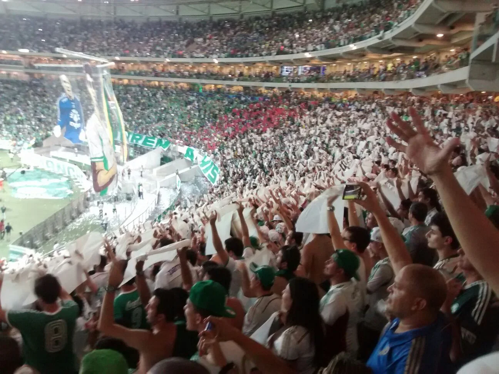

Sociedade Esportiva Palmeiras
O verde
vem de
longe.
De uma reunião em 1914 às vozes do Gol Norte, a história de um clube contada por quem ocupou o campo e a arquibancada.
Ler a história →
Nesta edição
Sociedade Esportiva Palmeiras
De uma reunião em 1914 às vozes do Gol Norte, a história de um clube contada por quem ocupou o campo e a arquibancada.
Ler a história →
Nesta edição